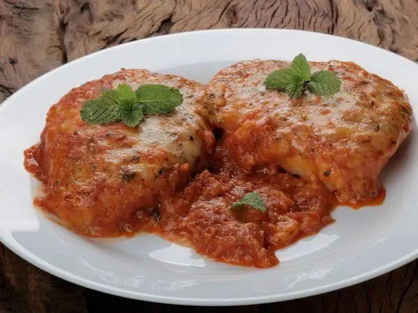

Receitas do Guh
Após muitos seguidores pedirem as minhas receitas no direct do instagram, decidi compartilha-las com vocês.
Espero que gostem!
Receitas Italiana
Bifé à parmegiana na churrasqueira

Ingredientes
- Bife:
- 1kg de alcatra
- Pimenta do reino a gosto
- Sal a gosto
- Alho
- Molho:
- 10 tomates italianos
- Manjericão
- Alho
- Sal a gosto
- Pimenta do reino a gosto
- Orégano a gosto
- Folha de louro
- Pimentão
- 1 Pimenta dedo de moça
- 2 Cebolas
- Cheiro verde
- Empanhamento:
- Ovo
- Leite
- Farinha de rosca
- Sal a gosto
- Pimenta do reino a gosto
- Paprica picante
- Orégano
Modo de preparo
- Molho:
Corte os tomates e os pimentões e as cebolas ao meio e leve-os para assar na churraqueira.
Depois de assados retires as cascas e coloque-os dentro do liquidificador.
Adicione sal e o alho.
Bata e depois coloca em uma panela adicionando a pimenta do reino, orégano e a folha de louro para ferver na churrasqueira e finaliza com cheiro verdee manjeiricão.
- Bife:
Temperes os bifes com sal, alho e pimenta do reino.
Levo-os para a churrasqueira apenas para defumar com a fumaça do carvão.
Retire-os e vamos para o empanamento.